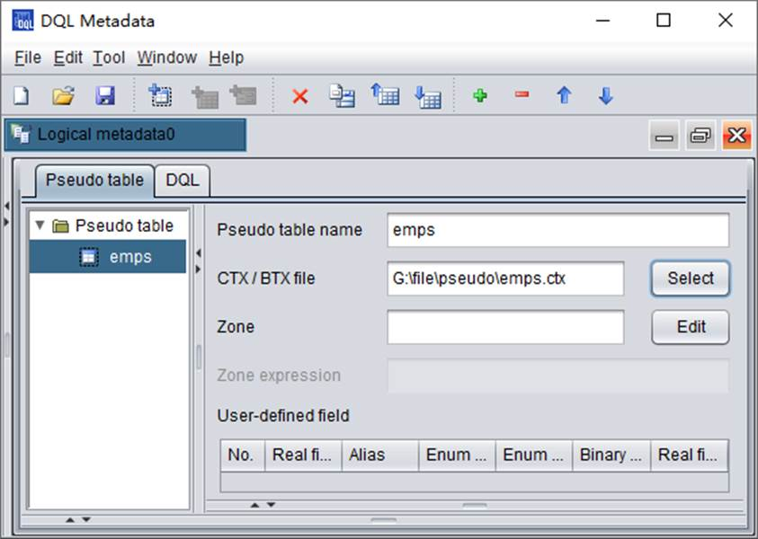
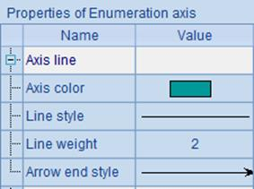
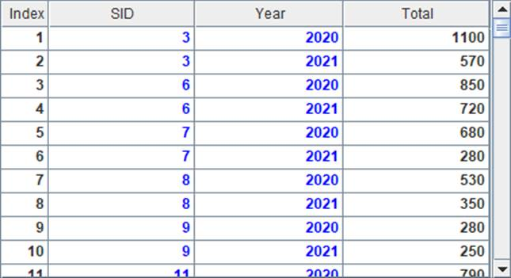
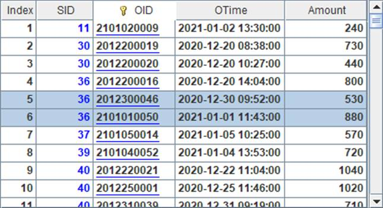
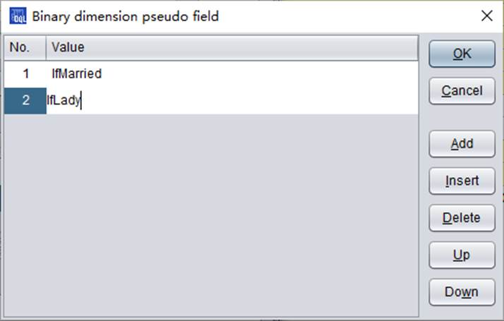

To define metadata, you need to first define the pseudo table that will be used in DQL. The pseudo table must come from a composite table or a bin file. Click ¡°Add pseudo table¡± icon , or click Edit->Add pseudo table through the menu bar, to add a pseudo table definition for the metadata:
Click ¡°Select¡± button to select the data file for generating the pseudo table. You can change the variable name used by the pseudo table in DQL as needed:

Here we use the original composite table file emps.ctx. After data is selected for the pseudo table, the pseudo table name will be automatically changed to one the same as the composite table file name. You can also change it as you like. To define a custom field for the pseudo table, the process is similar to that of defining a pseudo table user-defined field explained in the above section. You just add one under the ¡°User-defined field¡± and modify the corresponding field of the records in column definition. Click ¡°Add row¡± icon , or click Edit->Add row through the menu bar, to add a new field. As the following shows, we add enumerated pseudo field Dept and binary dimension pseudo fields IfMarried and IfLady:

Double-click the cell under ¡°Enum dim value sequence¡± to set up enumerated values for the enumerated pseudo field:

Similarly, Double-click the cell under ¡°Binary dimension pseudo field¡± to set up values for the binary dimension pseudo field:

The DQL interface offers meticulous guide to configurations of pseudo table custom field in DQL, such as setting up enum field and bits field for defining apply expressions under ¡°Enum dim value sequence¡± and ¡°Binary dimension pseudo field¡± respectively.